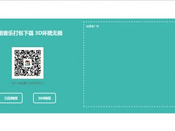
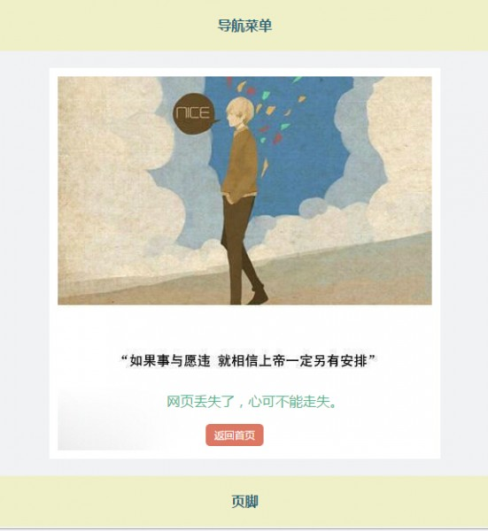

前端设计
Jquery多功能提示通知弹出对话框插件jBox中文文档
jBox是一个强大和灵活的jQuery插件，用于创建你所有的模态窗口，提示，通知或更多。 基本 有两种简单的方法创建jBox，你可以使用jQuery选择器或者...

分享一个简洁大方自适应的独立下载页面
一个简洁的独立下载页面，自适应。把下载按钮布置在网页的左边，广告位布置在右边，使用户能够更多的注意到广告。大家可以集成到自己的网站，下一...
Javascript压缩合并后不能正常工作解决办法
相信很多网站都会通过压缩JS来提高网站加载速度，通过合并JS来减少请求数。对于使用wordpress的用户来说，还有一些插件提供压缩网页的功能，压缩完...

九封写给自己的情书制作的404页面
在微博上看到的一组图文，我称之为写给自己的情书，心累的时候不妨看一看。今天突发奇想把这组图片做成一个404页面，一共九张图片随机循环出现，...
火狐浏览器与谷歌浏览器网页三列布局的兼容实现
三栏布局是目前最常见的网页布局之一，主要页内容放在中间一栏，边上的两栏放置导航链接、小工具之类的内容。基本布局一般是标题之下放置三栏，三...
多说评论圆角CSS样式美化版分享
多说评论是wordpress圈子中站长使用最多的评论系统，畅言评论系统主要活跃于新闻站和下载站。而对于多说评论系统有两点比较吸引我： 可以屏蔽垃圾...
利用jQuery 遍历实现边栏跟随效果
一、原理思路 首先确定边栏跟随效果是一个与浏览器滚动有关的事件，当滚动到边栏底部的时候，触发事件，给要跟随滚动的div增加fixed属性，使其固定...
- 谢谢，你现在的主题很棒发表在：留言板
 张弦先生之前买过博主的第一款主题。现在的主题更不错，张弦先生来访，欢迎回访发表在：留言板
张弦先生之前买过博主的第一款主题。现在的主题更不错，张弦先生来访，欢迎回访发表在：留言板 54台很不错啊发表在：友情链接
54台很不错啊发表在：友情链接- 现在已被屏蔽。我再放上去，我的网站就被屏蔽咯发表在：免费VPN账号获取
 naive浏览器换了无数个都看不到密码发表在：免费VPN账号获取
naive浏览器换了无数个都看不到密码发表在：免费VPN账号获取